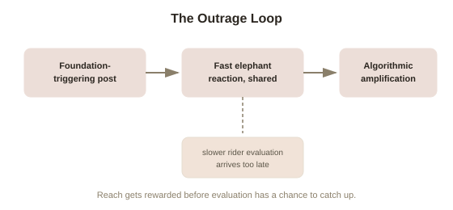

Chapter 5: Moral Psychology and Polarization Today
Chapter 1 mentioned that Haidt has become a prominent, sometimes controversial voice applying moral psychology to current cultural debates — social media, free speech, polarization — rather than staying confined to the academic study of abstract vignettes. This closing chapter takes that application seriously, tracing how the elephant, the six foundations, and moral dumbfounding all show up, at scale, in how public discourse actually behaves today.
Outrage as an amplified, fast-moving elephant
Chapter 1's elephant-and-rider model was built around individual judgment, but the same fast, automatic, intuition-first structure scales strikingly well to online behavior. Research on social media dynamics, including work Haidt has drawn on directly, has found that posts expressing moral outrage — especially those triggering care/harm or fairness/cheating foundations, the two most universally shared across the political spectrum — are shared and amplified by platform algorithms considerably more than neutral or reasoned content, essentially because outrage reliably produces fast engagement, and engagement is what most platforms are structurally built to reward. This creates a feedback loop with a specific psychological shape: the elephant reacts and shares near-instantly; the rider's slower, more careful evaluation — is this framing accurate, is this the full context, is my reaction proportionate — often arrives, if it arrives at all, only after the sharing has already happened and the post has already spread.
Moral dumbfounding, weaponized at scale
Chapter 2's moral dumbfounding finding — a fixed verdict, reasoning arriving afterward purely to defend rather than genuinely evaluate — describes something close to the default mode of a heated online argument. Two people rarely update their position mid-exchange, even as their stated reasons get directly refuted, because (per Chapter 2's mechanism) the reasons were never actually generating the position in the first place; they're being generated afterward to defend it. Haidt's applied argument is that social media doesn't just fail to fix this well-documented feature of moral psychology — its structure (rapid, public, reputation-linked exchanges, rewarded by visible approval from your own side) actively makes updating a position mid-argument feel more costly than it does in a slower, private conversation, since a visible reversal in front of an audience carries social stakes a private one-on-one disagreement doesn't.

Different foundations, different flashpoints — a genuinely testable prediction
Chapter 4's individualizing-versus-binding foundation split makes a specific, checkable prediction about what different political groups will find most viscerally outrageous online, and it holds up reasonably well against observed patterns: content triggering care/harm and fairness/cheating tends to provoke the strongest reaction across a broad, ideologically mixed audience (since these are the most universally weighted foundations), while content triggering loyalty, authority, or sanctity tends to provoke intense reaction concentrated more heavily among audiences that weight those binding foundations more heavily — meaning two different political communities can be responding, with equal intensity and equal moral sincerity, to the same event through entirely different foundational lenses, largely talking past rather than actually engaging each other's actual concern.
What actually helps, according to this framework
None of this is presented as a reason to disengage entirely, and the framework does point toward specific, actionable responses rather than only diagnosing the problem. Recognizing which foundation is actually driving an opposing reaction — Chapter 1's original suggestion — remains one of the most concrete, usable tools: it reframes "they're wrong or arguing in bad faith" into "they're responding to a different foundation than the one I'm weighting," which is a genuinely different, more productive starting point for actual dialogue rather than mutual moral dumbfounding. Building in deliberate delay — a pause before sharing or responding to outrage-triggering content — directly targets the elephant's speed advantage, giving the rider a chance to catch up before a reaction becomes public and therefore hard to walk back. Neither fix is a complete solution to a problem this deeply rooted in basic moral psychology, but both follow directly and usefully from everything the previous four chapters established about how moral judgment actually works.
Try this
Ideas for noticing or testing this in your own life.
- Next time a post makes you feel a strong, fast moral reaction, wait before sharing or replying — even ten minutes is often enough to let the rider catch up to the elephant, per this chapter's model.
- In your next real disagreement about a political or moral issue, try explicitly naming which foundation you think is driving the other person's reaction — care, fairness, loyalty, authority, sanctity, liberty — before responding to their stated argument.
Worth pulling on?
A few loose threads from this chapter — if any of these genuinely grab you, that's a good sign of where to go next.
- The dynamics of outrage spreading fastest through a crowd, amplified rather than dampened by the presence of many other people, has a close cousin in older research on crowds and deindividuation. → Already in the library: Group Dynamics and Crowds covers how anonymity and crowd size shift individual behavior offline.
- Building in deliberate delay before reacting is a specific, real-world application of a broader debiasing strategy covered elsewhere in this library. → Already in the library: Cognitive Biases & Judgment covers structural techniques for slowing down fast, automatic judgment more generally.